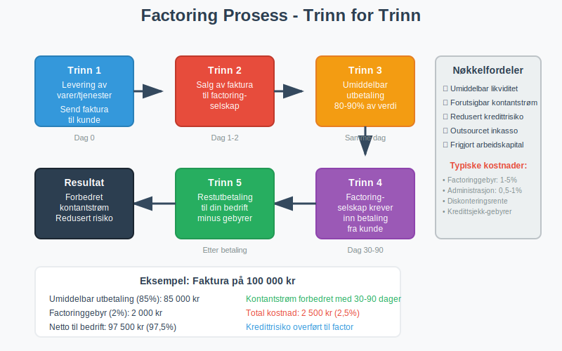
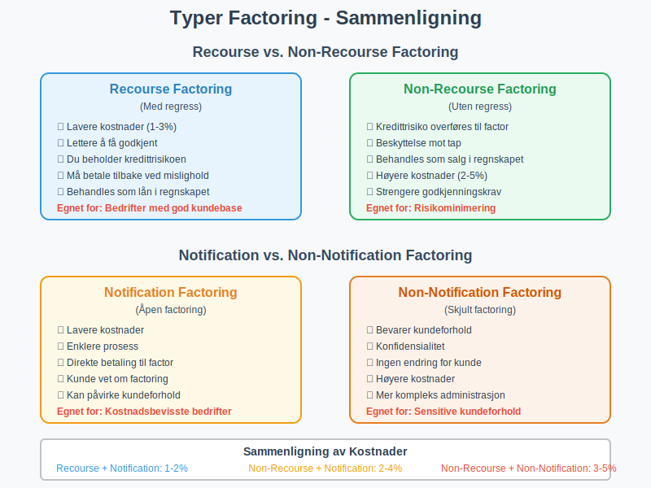
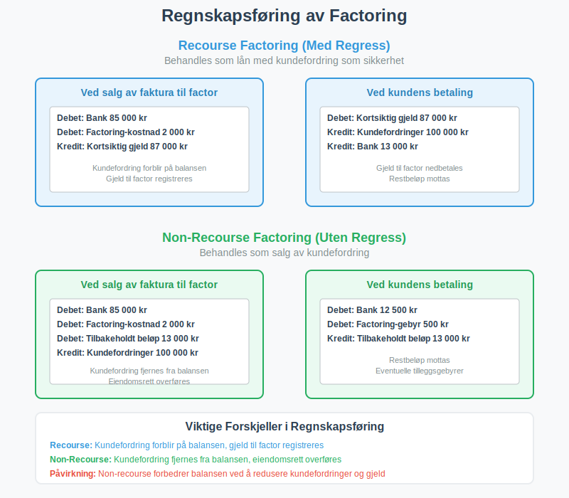

Factoring er en spesialisert finansieringstjeneste hvor bedrifter selger sine utestående fakturaer til et factoringselskap for å få umiddelbar kontantstrøm. I stedet for å vente 30-90 dager på at kundene betaler, kan bedriften få opptil 90% av fakturaverdien utbetalt samme dag. Dette er en populær løsning for bedrifter som driver med fakturasalg og trenger å forbedre sin betalingsevne og arbeidskapital.
Seksjon 1: Hvordan Factoring Fungerer
Factoring-prosessen involverer tre parter: leverandøren (din bedrift), kunden (som skylder penger), og factoringselskapet (som kjøper fakturaene). Prosessen er enkel og effektiv for bedrifter som har utfordringer med kontantstrøm.

Trinn-for-trinn Prosess:
- Levering av varer/tjenester: Din bedrift leverer varer eller tjenester til kunden og sender faktura
- Salg til factor: Du selger fakturaen til factoringselskapet
- Umiddelbar utbetaling: Factoringselskapet betaler deg 80-90% av fakturaverdien umiddelbart
- Kundeinnkreving: Factoringselskapet tar ansvar for å kreve inn betalingen fra kunden
- Restutbetaling: Når kunden betaler, får du restbeløpet minus factoringgebyrer
Seksjon 2: Typer Factoring
Det finnes flere ulike typer factoring-tjenester som passer til forskjellige bedriftsbehov og risikoprofiler.

2.1 Recourse vs. Non-Recourse Factoring
| Type | Beskrivelse | Risiko | Kostnad |
|---|---|---|---|
| Recourse Factoring | Du beholder risikoen hvis kunden ikke betaler | Høy risiko for leverandør | Lavere gebyrer (1-3%) |
| Non-Recourse Factoring | Factoringselskapet tar kredittrisikoen | Lav risiko for leverandør | Høyere gebyrer (2-5%) |
2.2 Notification vs. Non-Notification Factoring
Notification Factoring (åpen factoring):
- Kunden blir informert om at fakturaen er solgt
- Betalinger går direkte til factoringselskapet
- Lavere kostnader da prosessen er mer transparent
Non-Notification Factoring (skjult factoring):
- Kunden vet ikke at fakturaen er solgt
- Betalinger går fortsatt til din bedrift, som videresender til factor
- Høyere kostnader, men bevarer kundeforholdet
2.3 Spot Factoring vs. Hele Porteføljen
- Spot Factoring: Salg av enkeltfakturaer ved behov
- Portefølje Factoring: Kontinuerlig salg av alle eller de fleste fakturaer
Seksjon 3: Kostnader og Gebyrer
Factoring-kostnader består av flere komponenter som påvirker den totale prisen for tjenesten.
Hovedkostnader ved Factoring:
- Factoringgebyr: 1-5% av fakturaverdien, avhengig av risiko og volum
- Diskonteringsrente: Månedlig rente på forskuddsbeløpet (0,5-2% per måned)
- Administrasjonsgebyrer: Faste kostnader for behandling og oppfølging
- Kredittsjekk-gebyrer: Kostnader for vurdering av kundens kredittverdighet
Eksempel på Factoring-kostnad:
La oss si du har en faktura på 100 000 kr med 30 dagers betalingsfrist:
| Komponent | Beløp | Prosent |
|---|---|---|
| Fakturaverdien | 100 000 kr | 100% |
| Umiddelbar utbetaling | 85 000 kr | 85% |
| Factoringgebyr | 2 000 kr | 2% |
| Administrasjonsgebyr | 500 kr | 0,5% |
| Netto utbetaling ved betaling | 97 500 kr | 97,5% |
| Total kostnad | 2 500 kr | 2,5% |
Seksjon 4: Fordeler med Factoring
Factoring tilbyr flere betydelige fordeler for bedrifter, spesielt de som opplever utfordringer med kontantstrøm eller vekst.
Forbedret Kontantstrøm
- Umiddelbar likviditet: Få penger samme dag i stedet for å vente 30-90 dager
- Forutsigbar kontantstrøm: Planlegg bedre med garantert utbetaling
- Redusert arbeidskapital-behov: Mindre behov for å binde opp kapital i kundefordringer
Redusert Administrativ Byrde
- Outsourcet inkasso: Factoringselskapet håndterer betalingsoppfordringer og inkassovirksomhet
- Kredittsjekk: Profesjonell vurdering av kunders kredittverdighet
- Redusert risiko: Mindre tap på fordringer ved non-recourse factoring
Vekstmuligheter
- Finansiering av vekst: Bruk kontantstrømmen til å investere i vekst
- Større ordrer: Ta imot større ordrer uten å bekymre deg for finansiering
- Konkurransefortrinn: Tilby bedre betalingsbetingelser til kunder
Seksjon 5: Ulemper og Risikoer
Selv om factoring har mange fordeler, er det viktig å forstå potensielle ulemper og risikoer.
Kostnader
- Høyere finansieringskostnad: Ofte dyrere enn tradisjonelle banklån
- Redusert fortjeneste: Factoringgebyrer reduserer bruttofortjenesten
- Avhengighet: Kan bli avhengig av factoring for kontantstrøm
Kundeforhold
- Kundeoppfatning: Noen kunder kan oppfatte factoring som tegn på finansielle problemer
- Tap av kontroll: Mindre kontroll over inkassoprosessen
- Konfidensialitet: Ved notification factoring mister du konfidensialitet
Operasjonelle Risikoer
- Kvalitetskrav: Factoringselskaper kan avvise fakturaer av lav kvalitet
- Kundekonsentrasjon: Høy avhengighet av få store kunder kan være problematisk
- Kontraktsbinding: Lange kontrakter kan redusere fleksibilitet
Seksjon 6: Regnskapsføring av Factoring
Regnskapsføringen av factoring avhenger av om det er recourse eller non-recourse factoring, og dette påvirker hvordan transaksjonen behandles i regnskapet.

Recourse Factoring (med regress)
Ved recourse factoring beholder bedriften kredittrisikoen, så fakturaen behandles som et lån med kundefordringen som sikkerhet:
Ved salg av faktura:
Debet: Bank 85 000 kr
Debet: Factoring-kostnad 2 000 kr
Kredit: Kortsiktig gjeld 87 000 kr
Ved kundens betaling:
Debet: Kortsiktig gjeld 87 000 kr
Kredit: Kundefordringer 100 000 kr
Kredit: Bank 13 000 kr
Non-Recourse Factoring (uten regress)
Ved non-recourse factoring overføres både eiendomsrett og risiko, så det behandles som et salg:
Ved salg av faktura:
Debet: Bank 85 000 kr
Debet: Factoring-kostnad 2 000 kr
Debet: Tilbakeholdt beløp 13 000 kr
Kredit: Kundefordringer 100 000 kr
Ved kundens betaling:
Debet: Bank 12 500 kr
Debet: Factoring-gebyr 500 kr
Kredit: Tilbakeholdt beløp 13 000 kr
Seksjon 7: Alternativer til Factoring
Før du velger factoring, bør du vurdere andre finansieringsalternativer som kan være mer kostnadseffektive.
Tradisjonelle Finansieringsformer
- Banklån: Lavere rente, men krever sikkerhet og lang behandlingstid
- Kredittlinje: Fleksibel finansiering, men krever god egenkapital
- Leverandørfinansiering: Forhandling om lengre betalingsfrist med leverandører
Moderne Finansieringsløsninger
- Invoice Trading: Auksjon av fakturaer til investorer
- Supply Chain Finance: Finansiering gjennom hele leverandørkjeden
- Fintech-løsninger: Digitale plattformer med raskere behandling og lavere kostnader
Forbedring av Kontantstrøm
- Bedre betalingsbetingelser: Kortere betalingsfrister og forskuddsbetaling
- Automatiserte betalingsløsninger: AvtaleGiro og eFaktura
- Effektiv oppfølging: Systematisk betalingsoppfordring
Seksjon 8: Når Bør Du Vurdere Factoring?
Factoring er ikke riktig for alle bedrifter, men kan være en utmerket løsning i spesifikke situasjoner.
Ideelle Kandidater for Factoring:
- B2B-bedrifter med lange betalingsfrister (30+ dager)
- Vekstbedrifter som trenger kapital for ekspansjon
- Sesongbaserte virksomheter med varierende kontantstrøm
- Bedrifter med kredittverdige kunder men egen dårlig kredittrating
Situasjoner hvor Factoring er Spesielt Nyttig:
- Akutt likviditetsbehov: Når du trenger penger raskt
- Vekstfinansiering: For å finansiere nye ordrer eller ekspansjon
- Risikohåndtering: Når du vil redusere kredittrisiko
- Administrativ avlastning: Når inkasso tar for mye tid og ressurser
Når Factoring IKKE er Anbefalt:
- Lave marginer: Hvis factoringkostnadene spiser opp fortjenesten
- Få, store kunder: Høy konsentrasjonsrisiko kan være problematisk
- Dårlig kundebase: Kunder med dårlig betalingshistorikk
- Korte betalingsfrister: Hvis kundene allerede betaler raskt
Seksjon 9: Hvordan Velge Factoringselskap
Valg av riktig factoringpartner er kritisk for suksess med denne finansieringsformen.
Viktige Evalueringskriterier:
| Kriterium | Hva å se etter | Spørsmål å stille |
|---|---|---|
| Kostnader | Transparente gebyrer og renter | Hva er totalkostnaden? Finnes det skjulte gebyrer? |
| Fleksibilitet | Mulighet for spot factoring | Kan jeg velge hvilke fakturaer jeg selger? |
| Kundeservice | Profesjonell behandling av dine kunder | Hvordan håndterer dere inkasso? |
| Teknologi | Moderne systemer og rapportering | Hvilke digitale verktøy tilbys? |
| Erfaring | Bransjekunnskap og track record | Har dere erfaring med min bransje? |
Due Diligence Sjekkliste:
- Regulering: Er selskapet regulert av Finanstilsynet?
- Referanser: Kan de oppgi referanser fra lignende bedrifter?
- Kontrakt: Les kontrakten nøye, spesielt oppsigelsesklausuler
- Rapportering: Hvilken rapportering og innsikt får du?
- Support: Hvor tilgjengelig er kundeservice?
Seksjon 10: Fremtiden for Factoring
Factoring-industrien utvikler seg raskt med nye teknologier og forretningsmodeller som gjør tjenesten mer tilgjengelig og kostnadseffektiv.
Teknologiske Innovasjoner:
- Kunstig intelligens: Automatisert kredittscoring og risikoevaluering
- Blockchain: Økt transparens og reduserte transaksjonskostnader
- API-integrasjoner: Sømløs integrasjon med regnskapssystemer
- Sanntidsanalyse: Bedre innsikt i kontantstrøm og kundeadferd
Nye Forretningsmodeller:
- Peer-to-peer factoring: Direkte matching mellom bedrifter og investorer
- Mikro-factoring: Factoring av små beløp for mindre bedrifter
- Bransje-spesifikke løsninger: Skreddersydde tjenester for spesifikke sektorer
- Integrerte finanstjenester: Factoring som del av helhetlige finansløsninger
Factoring vil fortsette å være en viktig finansieringsform for bedrifter som trenger fleksibel tilgang til arbeidskapital. Med teknologiske fremskritt blir tjenesten mer effektiv, rimeligere og tilgjengelig for et bredere spekter av bedrifter.
Ved å forstå hvordan factoring fungerer, kostnadene involvert, og når det er den rette løsningen, kan bedrifter ta informerte beslutninger om denne finansieringsformen. Husk å alltid sammenligne alternativer og velge en løsning som passer din bedrifts spesifikke behov og situasjon.